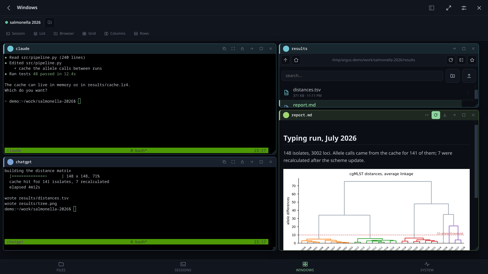
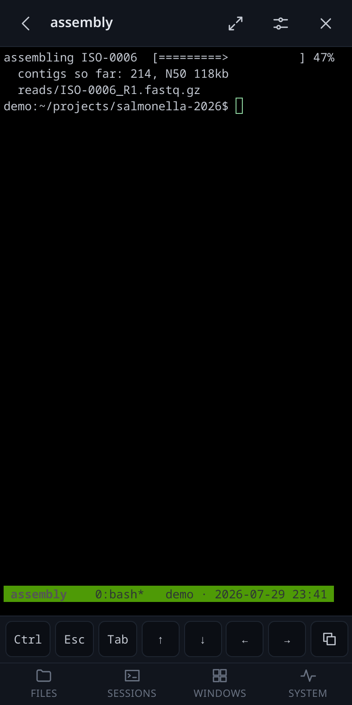
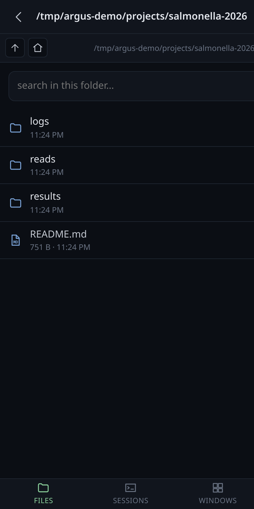
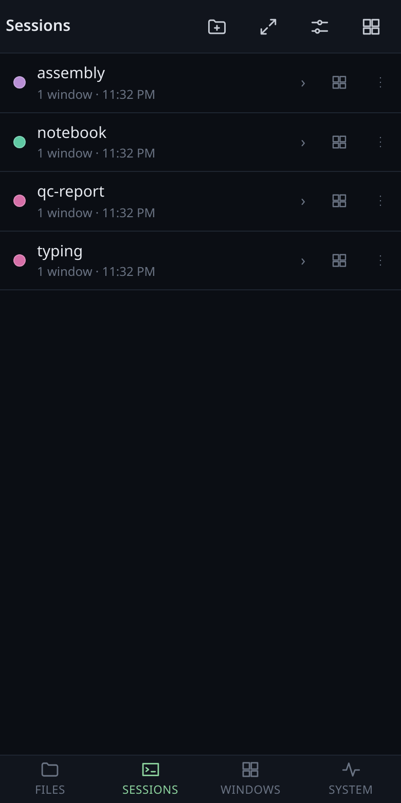
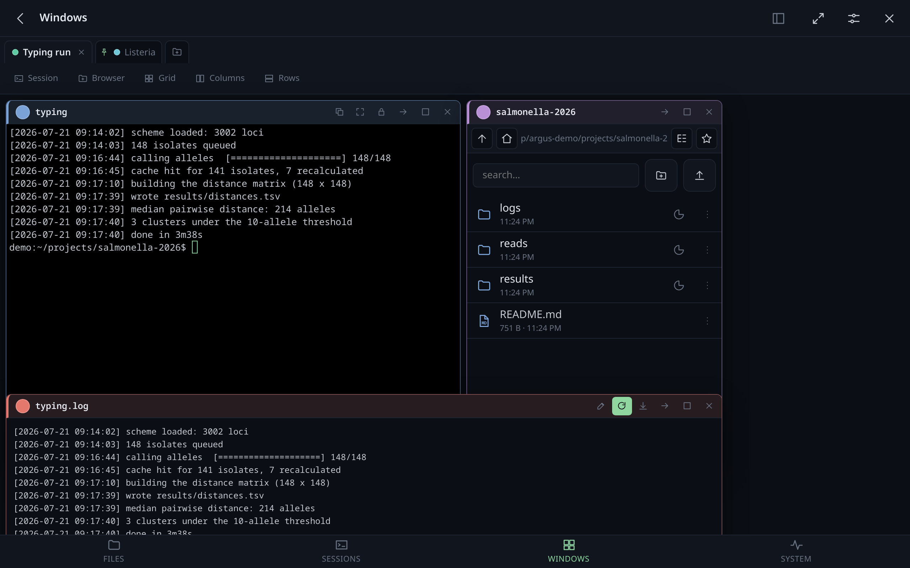
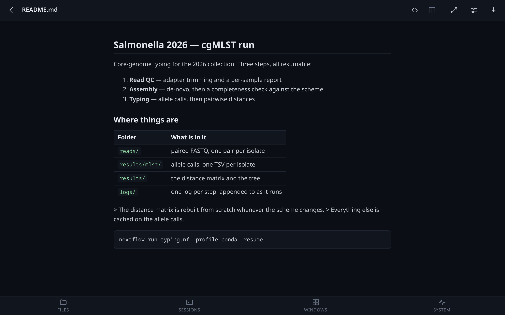
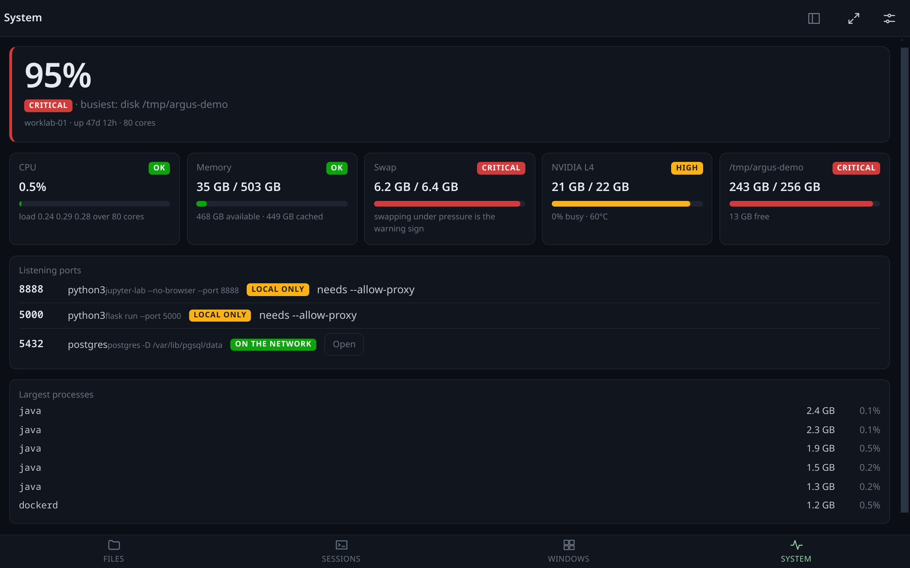
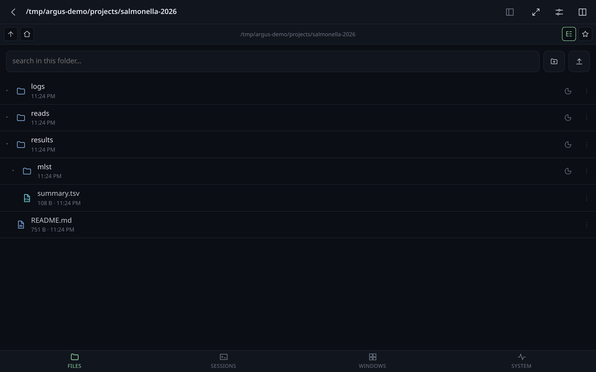

Watch your AI agents work. From anywhere.
They already run in tmux — Claude Code, Codex, Gemini, a script that takes two hours. Argus puts those sessions, the files they are writing and the report they just produced in one browser tab, and the same thing on your phone. Nothing to install inside the agent: if it runs in a terminal, it works.
git clone https://github.com/andreaderuvo/argus && cd argus
pip install -r requirements.txt
python3 -m app.main --allow-write # prints a URL with a token in it
MIT · Python + vanilla JS · no build step · no database · self-hosted

1 2 3 4tmux attach, squint at a pane.scp the report out, or cat it and read markdown as markdown.Recorded from a demo instance: fabricated sessions, fabricated files, real interface.
Two agents on one machine share a filesystem, so what has to travel
between them is not the work — it is a short sentence and a pointer to where the work
is. Argus ships the patterns ready-made: together, where a plan file
says who owns which file and neither may touch the other's, and
one builds, the other reviews, where the reviewer never edits and
finishes on VERDICT: OK or VERDICT: REDO.
That last line is readable by a machine as well as by a person, so Argus can read it and hand a REDO back on its own — off unless you turn it on, and counting down, because two agents bouncing a change between them for six hours unattended is not a feature. It works with any agent that can be told to end on a sentence, which is all of them.
An agent's output is mostly references to things: a path it wrote, a report it generated, a number in a file. So the terminal and the filesystem are the same room.
A path printed in the session opens beside the terminal, and the file browser jumps to it and marks it. Relative paths resolve against the pane's own working directory.
Every absolute path and URL that goes past in a desk's terminals collects in a list you click, checked against the filesystem first. Drag a line onto a terminal and it is typed there: that is how you tell an agent which file to look at.
Markdown with its figures, PDF with a search box, Word through pandoc, images, and a log that starts at the end.
An agent hook says whether it finished or is waiting for you, and the two look different on screen — in another tab too, on the title and the icon, no certificate needed. Guessing from the output is what makes notifications noise.
Terminals, folders and documents side by side, snapping to each other. Shared edges behave as splitters, and each desk has its own link and its own starting folder.
Folders of prompts written with placeholders, and named sets that fill them — one wording serves every project. Hover to see exactly what it will say before it says it, drag one onto a terminal to hand it over, or aim it at two agents at once and press it once.
A folder you are watching notices what a job writes into it, without you refreshing anything.
Ctrl+V in a listing writes it into that folder, numbered, and hands back its path — ready to paste into the session as the next instruction.
Chain the terminals and what you type reaches all of them, Enter included. The chained windows are outlined and counted, so a broadcast is never something you have forgotten about.
? lists every shortcut — Ctrl+Alt for the screens,
Ctrl+Shift for the desk you are on — and any can be rebound by
pressing the combination you want. They stay out of a terminal's way: what you
type into a session belongs to the session.
Ready-made looks for tmux, from a button on the terminal: one session or all of them. Colours only, from a fixed list, checked on a throwaway server first — a theme that could take a session down would not be worth having.
CPU, memory, swap, GPUs, disks and listening ports, with a plain reading of whether anything is about to go wrong.
Type a number to stand in front of a port nothing found yet. Or paste the login
callback that died on localhost because you did the logging in on a
different machine: it is forwarded to the port it was meant for.
Panoptes is one page over every Argus you run: which machines are up, what is running on each, and a way in — one tile per machine.
Not a desktop page squeezed into a phone: a key bar for the modifiers a phone has not got, drag-to-scroll that keeps up with your thumb, a long press to open a path, windows you can resize with a finger, and a full-screen button because F11 is not on a phone.
And a box to write a line in — because typing into a terminal on Android can duplicate words, which is a browser bug no app can fix from the outside. In an ordinary text field the keyboard behaves, and the finished line goes to the session in one go.




Windows you arrange yourself, kept between visits.

Documents rendered, not downloaded.

Is the disk about to fill up again?

Files as a list or a tree, sizes on request.
git clone https://github.com/andreaderuvo/argus && cd argus pip install -r requirements.txt python3 -m app.main --allow-write # prints a URL with a token in it
Open that URL, or scan the QR code it can print, and the phone is in. No build step, no database, no agent to install anywhere — and nothing changes about how you use tmux: Argus attaches to the sessions you already have and leaves them running when you close the tab.
tailscale serve --bg 8090. That also gives it a real certificate, which
is what makes the app installable and the clipboard work. An SSH tunnel or a reverse
proxy work too — the
README
has the configuration for each.
No. Argus attaches as a client to the sessions you already have, so what you see in the browser is the same pane you would see over ssh — and closing the tab leaves everything running, because a client is not a parent. Your config, your keys, your windows.
No. Argus reads what the session prints and types into it, which is all any agent does anyway. The one optional part is a hook that says finished or waiting for you — one line in your agent's config, and without it you get everything except the bell.
The terminal is the part that already existed — ttyd and gotty do that well. What this is for is the other half of the job: the files the session is writing, the report it produced, the paths it printed, the prompt you hand to the second agent, and knowing from another room that it is waiting for you.
You can, and you should think about it first. It is shell access behind a token, so the sensible shapes are a LAN, a VPN, or Tailscale — the last of which also gives you a certificate for free. Each device can hold its own token, revocable on its own, and the Journal records what changed and what was refused, with the address it came from, so has somebody been in here has an answer.
That is Panoptes: one page over every Argus you run, a tile per machine, which are up and what is running on each. Same idea, one level out.
Python on the server, vanilla JavaScript in the browser. No build step, no bundler, no database — a file for the config and one for the journal. Clone it and run it; the whole front end is a folder of static files you can read.